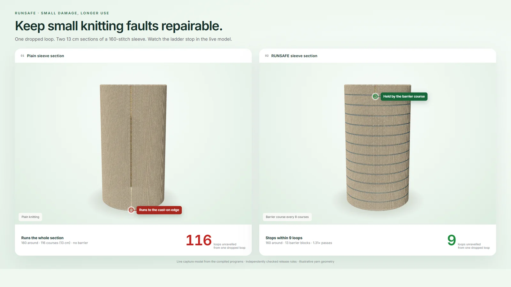
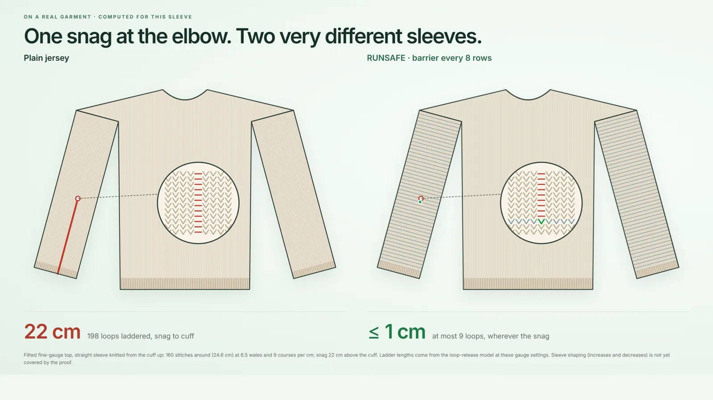
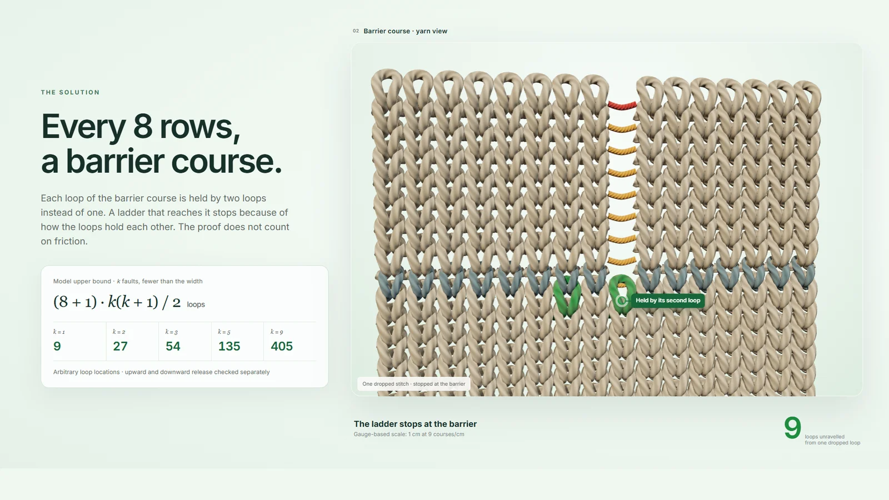
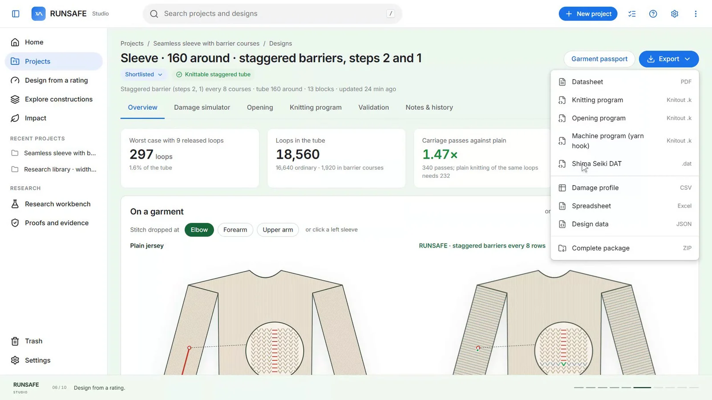
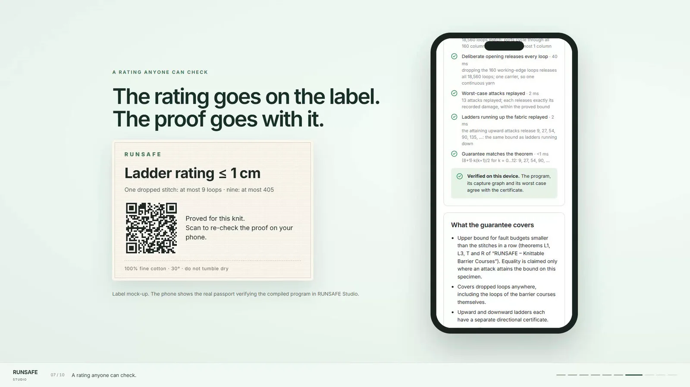
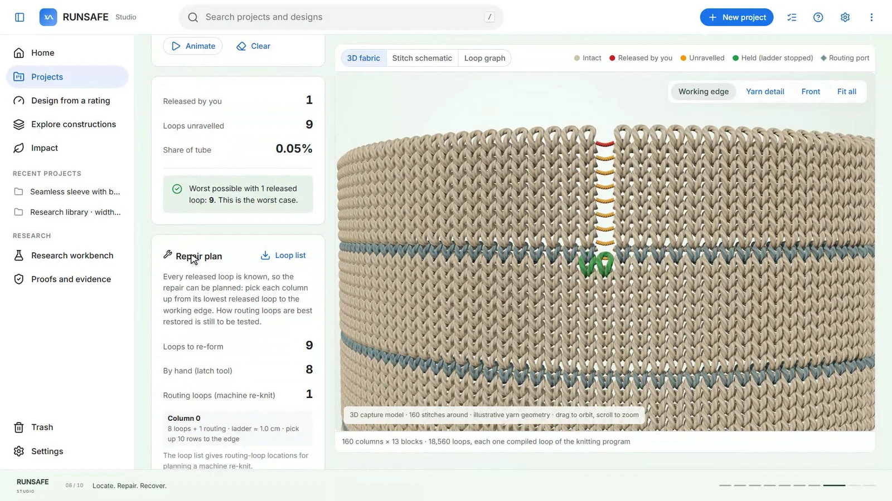
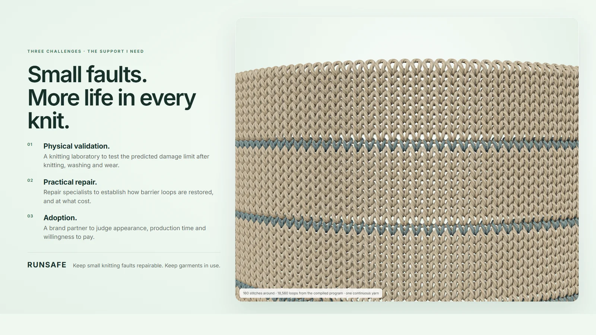

Bk = k(k + 1) / 2
The worst case for k dropped loops
Barrier-to-barrier segments that can open. The same at every circumference, from a 72-stitch cuff to a 320-stitch body, for ladders running down or up.
k = 11
k = 23
k = 36
k = 945
What does one dropped stitch cost?
RUNSAFE is design software that applies mathematical proof to knitting. It gives knitwear a damage rating, how far one dropped stitch can run, so small faults stay repairable and garments stay in use.

The demo · 10 chapters · 4:45
A narrated walkthrough recorded from RUNSAFE Studio and its presentation scenes, running on the compiled sleeve designs.
The problem
In ordinary knitting each loop is held by the loop above it. Drop one, and the whole column can unravel. In fine knitwear and smooth yarns such as silk, fine cotton and polyamide, a stitch dropped at the elbow of a plain sleeve can ladder to the cuff, and an almost intact garment can end up thrown away.
Run-stops exist, but they are validated on samples. Nobody states a worst case for a whole garment, and nobody can check one.

The solution
Each loop of the barrier course is held by two loops instead of one. A ladder that reaches it stops, because of how the loops hold each other. The proof does not count on friction, which matters most in smooth yarns where friction helps least.

Original mathematics · proved and checked for this project
Sample tests cover a handful of them. The proof covers every one.
Barrier-to-barrier segments that can open. The same at every circumference, from a 72-stitch cuff to a 320-stitch body, for ladders running down or up.
Compiling adds loops the design never drew. Faults in those extra loops are counted too.
The first optimal designs routed loops across the needle bed. The knittable barrier adds six passes per barrier, counted on the emitted program.
In the Studio · try it here
A designer no longer draws barriers. State the rating the garment must carry and the extra knitting you can afford; RUNSAFE returns the cheapest proved construction in its library. This is the Studio's logic for the 160-stitch seamless sleeve, running in your browser.
| Construction | One dropped stitch | Nine dropped | Carriage passes | Evidence | Meets the rating |
|---|
Compiled designs show their verified worst cases and the passes counted on the emitted program. Other spacings use the proved bound of Theorem 1 (s + 1 loops for one dropped stitch, 45·(s + 1) for nine) and the counted rule of six extra passes per barrier. Bounds hold in the declared loop-release model; physical trials are the next step.

Garment passport
A brand, a repairer or a buyer can verify the rating without taking anyone's word for it. Each passport states exactly what the guarantee covers.

Repair
The damage simulator shows which loops were released and lists those to re-form, column by column. How repairers best restore barrier loops is one of the first things to test.
The certificate also checks that the sleeve is one continuous, seamless yarn, with a deliberate route to unravel it at end of life.

Scale
Straight sleeves, cuffs and panels, where ladders run easily. The Studio compiles and certifies these designs today; shaped pieces come next.
≈ 37% of clothing-disposal reasons are quality failures such as tears and holes · Laitala & KleppCircular hosiery machines need their own barrier construction and compiler: research that starts in the first year.
130 M pairs of tights sold a year in France; 72% of women say a pair lasts about six wears · HOP survey, reported May 2018EU ecodesign rules will bring digital product passports to textiles. A damage rating anyone can re-check fits there.
1 QR on the care label opens the passport and re-checks the proof on the reader's phoneWorked example: 0.4 kg wool jumper, 21.93 kg CO₂e virgin baseline (Hester et al., Textiles, 2026), 2.39 kWh/kg knitting, 0.5 kg CO₂e/kWh, replacement rate 50%. This is a scenario; the pilots will measure its inputs.
Evidence
Each claim on this site, with how it is established.
| Claim | Status | How it is established |
|---|---|---|
| Worst case for k dropped loops, fewer than the width, at every circumference, down and up | Proved | Written theorems in a declared loop-release model; exhaustive computer checks on small tubes; attaining attacks replayed on tubes of 32, 72 and 160 stitches |
| The bound survives compilation into the machine program | Proved | Proof covering the loops the compiler adds; independently implemented reader; Carnegie Mellon's knitout simulator accepts the programs |
| 1.31× carriage passes for a barrier every 8 rows | Counted | Passes counted on the emitted program for the 160-stitch sleeve |
| ≤ 1 cm for one dropped stitch | From the gauge | 9 loops at the Studio's fine-knit default of 9 courses per cm |
| Shima Seiki export | Works | Machine variants convert to Shima Seiki DAT files with an open converter |
| Climate benefit | Modelled | Service-life model with sourced defaults and a stated replacement rate; each input flagged for measurement |
| Ladder length after knitting, washing and wear; repair time and cost | Next | Physical samples and wear trials with a knitting laboratory |
Existing structures already resist runs: hosiery run-stops through tuck courses and friction, warp knits by structure, interlock by doubling the loops. RUNSAFE adds a stated worst-case bound for any number of faults, a compiler that keeps it in the knitting instructions, and a certificate anyone can re-check.
Next steps
Knitting laboratories and technical centres with V-bed machines, fine-knitwear and technical-knit brands, repair services and unravelling operators: the next step is turning a checked design into knitwear.
Contact on LinkedIn
About · IT auditor, Strasbourg
RUNSAFE began with an auditor's question: could knitwear carry a rating the way software carries a guarantee, a stated limit for every allowed pattern of dropped loops, checkable by anyone? Knitting machines already run programs, so the question became mathematical. Five months of part-time research produced new theorems, a knitting-program compiler, verification tools and the Studio.
Marc trained in mathematics and economics in a French preparatory class, holds master's degrees in management and finance from Grenoble École de Management, and works as an IT auditor. In competitions: third of more than 850 teams in Google's MedGemma Impact Challenge, and a finalist at the European Patent Office CodeFest 2026.
Sources and scope